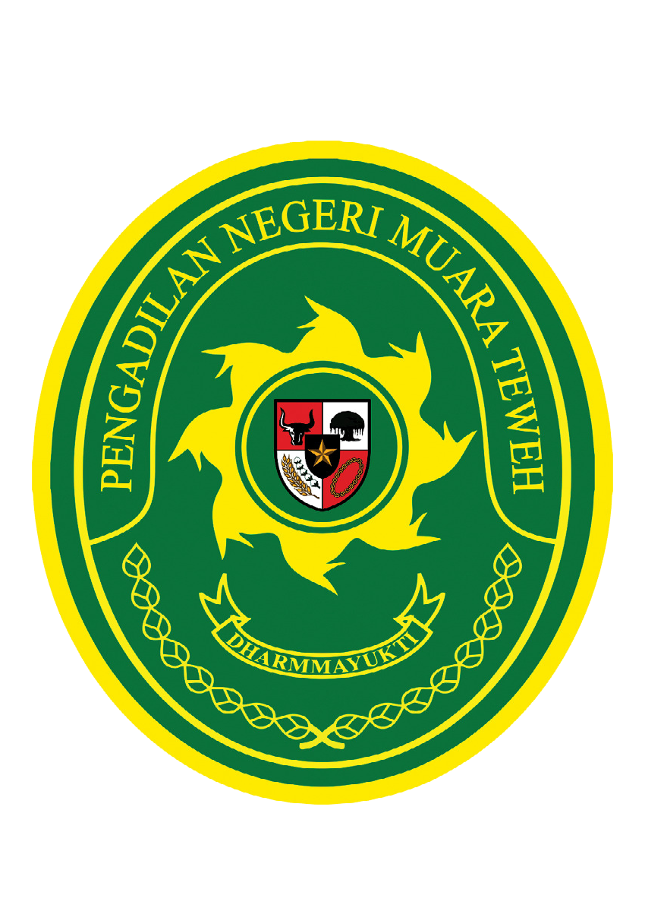

Pengadilan Negeri Muara Teweh
Jl. Yetro Sinseng No.8, Lanjas, Kec. Teweh Tengah, Kabupaten Barito Utara, Kalimantan Tengah 73812
Kelas II
Sistem Resmi Pengadilan
SIGAP
Sistem Informasi Gerbang Akses Pengadilan
PN Muara Teweh — Melayani dengan Transparan & Akuntabel
Transparan
Cepat & Mudah
Akuntabel
Pilih Layanan
4 kepaniteraan tersedia untuk Anda
Alur Pelayanan
Panduan umum mengurus layanan
📋 Tahapan Umum Pelayanan
Berlaku untuk seluruh kepaniteraan
1
Persiapan Berkas
Siapkan dokumen persyaratan sesuai jenis layanan
2
Pengambilan Nomor Antrian
Ambil nomor antrian di meja informasi atau secara online
3
Penyerahan & Verifikasi Berkas
Berkas diperiksa dan diverifikasi oleh petugas kepaniteraan
4
Pembayaran PNBP
Lakukan pembayaran biaya negara jika diperlukan
5
Pengambilan Produk
Dokumen/produk diberikan sesuai estimasi waktu layanan
Hubungi Kami
Kami siap melayani Anda